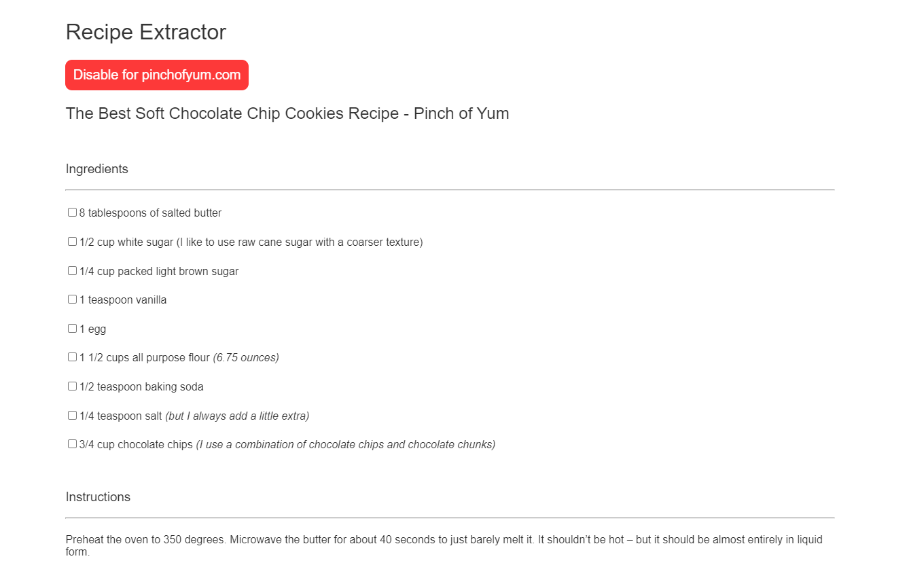

Overview
This is a Chrome extension build for extracting recipes from recipe websites. It is built primarily with Javascript
and uses the Chrome Extension API to interact with the browser.
The extension is extracts the recipe name, ingredients, and instructions
from the website. It also has a blacklist feature to allow users to use specific recipe websites as normal, utlizing the users local storage
to store the blacklisted websites.
How it works
The extension works by first checking if the current tab is a recipe website. If it is, the extension will extract the recipe name, ingredients, and instructions from the website and display it in a popup. It also has a dark mode, a toggle button, blacklist, and a small menu to allow the user
to access these features.
- Checking if current site is a recipe site: To check if the current site the user is on is a website, I first check if the extension
has been toggled on/off by the user. If not, I then check the blacklist to ensure the site is not blacklisted. Finally, I proceed with checking
that the website is a recipe page through the use of very specific CSS selectors I have discovered through lots of testing. Surprisingly,
there were a lot of patterns between recipe pages, which allowed me to account for most recipe websites.
- Extracting the recipe: After checking that we should be extracting the recipe, I then proceed with using the CSS selectors to extract the recipe from the HTML page. As long as I find the correct selectors, I can retrieve the recipe from the page. I also select the page title.
- Dark mode: Dark mode is handled by a conditional check when the page loads. The user can toggle it in the extension menu, which will save a value in their local storage as either true or false for me to check later. I have an event listener set on this value via the Chrome Extension API, and when users change this value through the toggle, the page toggles dark mode.
- Blacklist: The blacklist also uses Chrome local storage, but it has a bit more complexity. It stores a list of the url hostnames which are blacklisted, and users need to be able to add/delete values when they want to. When a user selects the blacklist button, I simply retrieve the blacklist from local storage, append the current hostname to it, and store the blacklist again.
- Popup menu: The popup menu was created in HTML/CSS and provides an interface for the user to change dark mode, the toggle button, and the blacklist. The popup menu accesses Chrome local storage to update the users selected settings, such as deleting a value from the blacklist or switching to night mode.
Results
Here is what this recipe website
looks like after opening it with the recipe extractor enabled:

Summary
I plan to continue to update and support the extension, add more features in the future such as a saved recipe list with only the recipe information on it. I am also continuing to grow the amount of users with the help of Google Tag Manager and Google Analytics to track user interactions and improve the extension. I currently have around 40 monthly users, and that number is steadily growing.